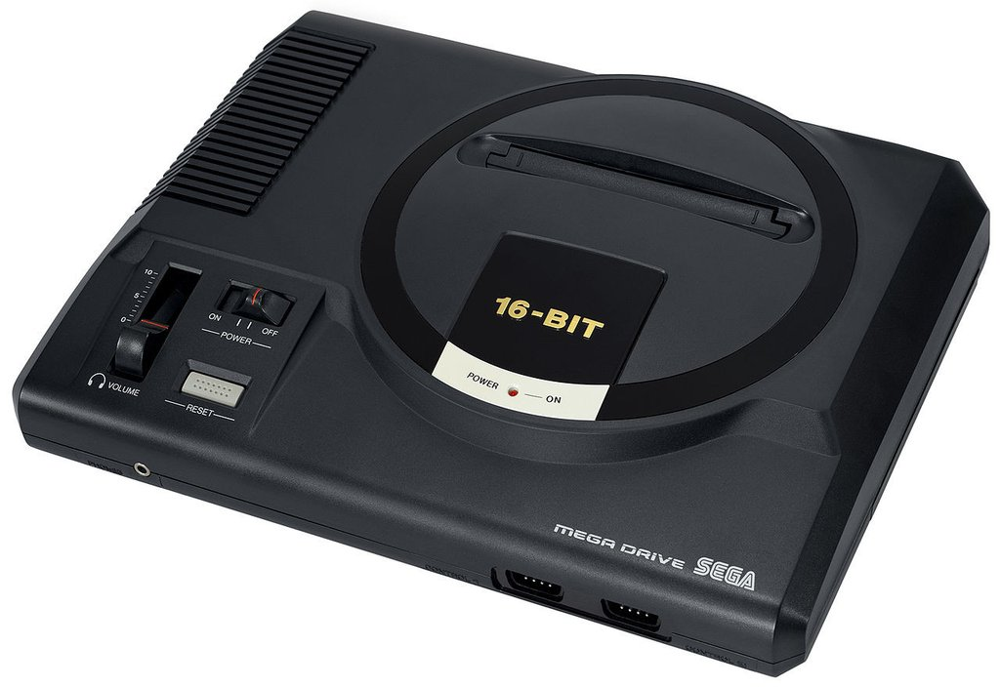
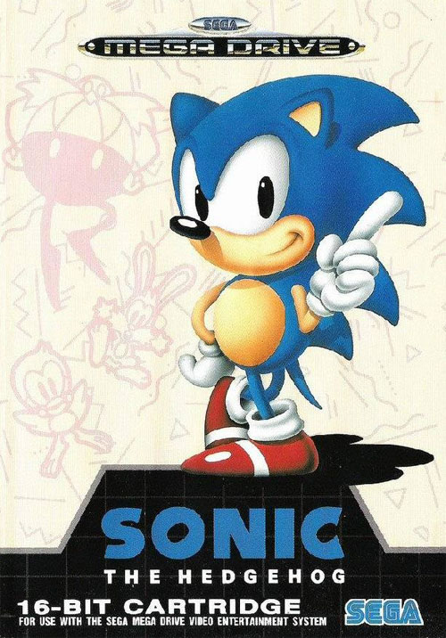
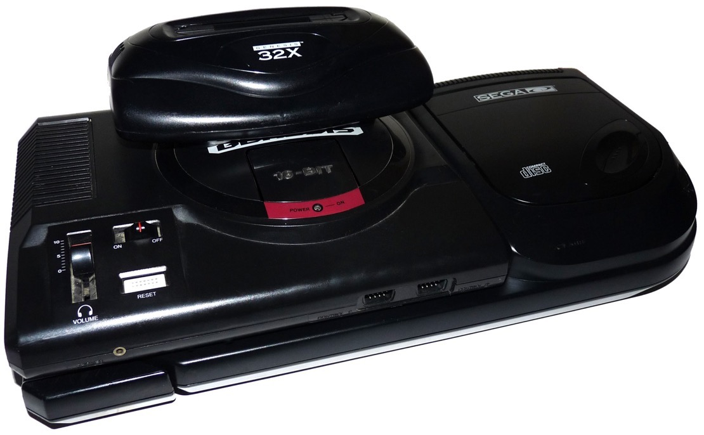

The Competition
Nintendo wasn't the only player in the early to mid 90s console market. The SNES faces stiff competition in Sega's Megadrive (Genesis in America) console. While in Japan Nintendo dominated, in America it was a very close fought race, and in Europe, Sega clearly took the lead. The Megadrive launched in Japan in 1988, 2 years before the SNES. It was the console that brought the arcade experience into people's homes for the first time! The SNES was generally a more powerful machine, but the Megadrive actually had a faster CPU which made it much more suitable for fast paced arcade games like Contra, Gunstar Heroes or the countless shoot em ups on the machine.
Mascots were big news in the 90's. Mario had acheieved name recognition on a par with Micky Mouse, and Sega's previous attempt, Alex Kidd, never quite entered mainstream consciousness in the same way. This all changed in 1991 with the launch of Sonic the Hedgehog. In the 90s Sonic actually ecclipsed Mario in popularity, and it''s not hard to see why. Mario was a fat guy with a moustache. Sonic was a cool anthropomorphised hedgehog in an era where anthropomorphized characters were big news (Teenage Mutant Ninja Turtles, Bucky O Hare, endless mascot platformers). While Sonic's early games were great fun, unlike Mario, his transition to 3D was never fully successful. His entries on the Megadrive are to this day, considered the strongest entries in the series and some of the best 2D platform games of all time
Sega was a highly experimental, if sometimes directionless company. In the 90s they developed two major add ons for the Megadrive; the Mega CD and the 32X. Both suffered from a lack of compelling hardware, limited technology and a small userbase. The Sega CD offered numerous FMV (full motion video) games that were minimally interactive, very low rent movies. It also offered games that were exactly the same as the Megadrive versions, but had CD sountracks. The 32X on the other hand offered a low entry, low cost entrypoint into the 32 bit next generation of consoles. While a handful of impressive (for the time) ports of arcade games emerged, like Virtua Racing, Virtua Fighter and Star Wars Arcade, it was clear to Sega and the public that this was not the next new console. Most waited for the Sega Saturn to arrive, and the 32X was quietly abandoned after a year on the market. Sony then undercut the Saturn in pricing and with better hardware, kicking Sega into a distant third in the console race behind Sony and Nintendo.
